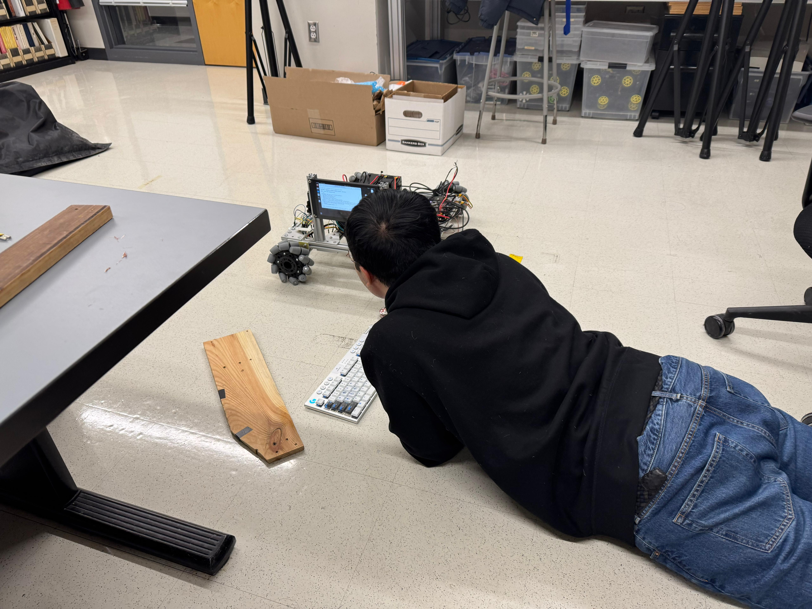
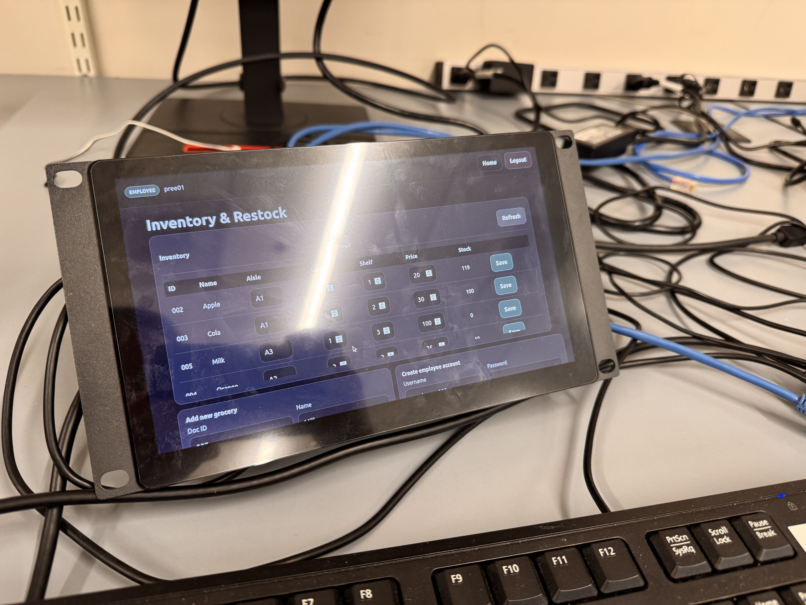
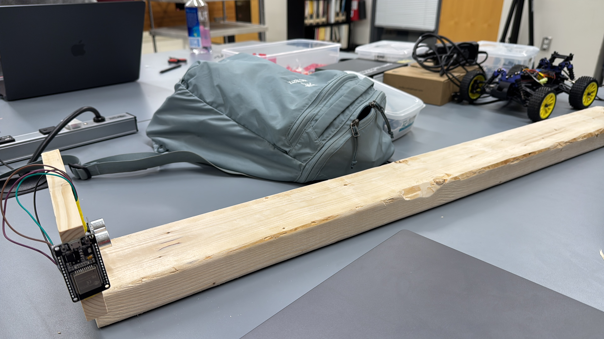
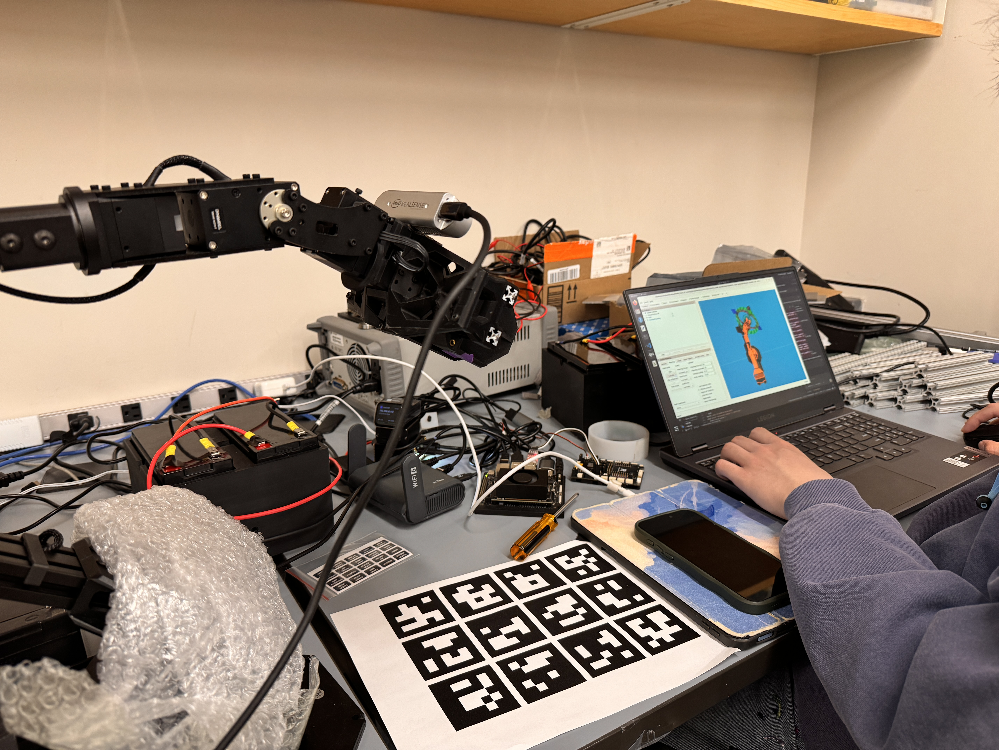
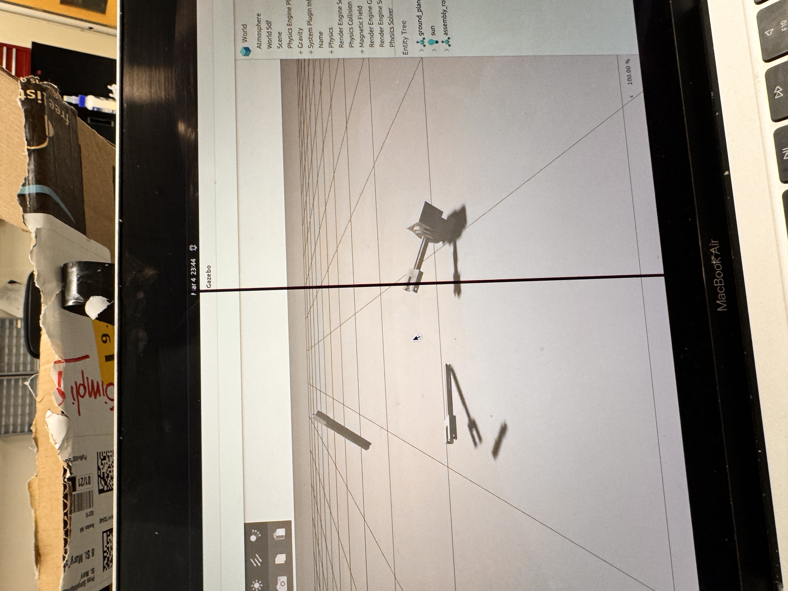
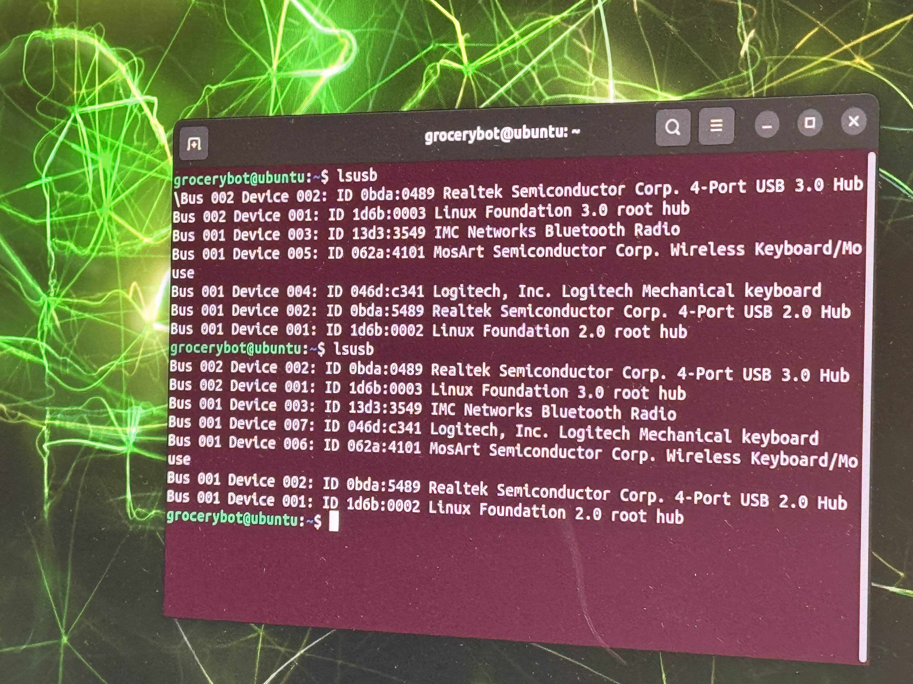
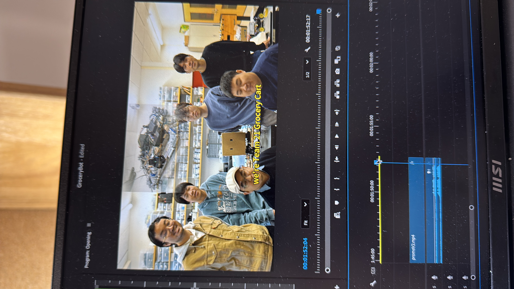

GOFR
Grocery Operational Fulfillment Robot
Senior Design Project, Sep 2025 - May 2026
Project Description
GOFR is a MechE x ECE senior design capstone project focused on building an autonomous grocery robot that can support both employee stocking and customer shopping. Our team developed a full robotic system with a mobile base, robotic arm, sensors, cameras, and AI-assisted software so the robot could navigate store environments, identify tasks, and coordinate manipulation with high-level decision making.
What made this project especially exciting was that it combined robotics, embedded systems, full-stack software, and early commercialization thinking in one system. Beyond building the robot itself, we also designed an online ordering and store management platform, connected web-based orders to robotic task execution, and thought carefully about how the system could scale toward future multi-robot fleet management.
My Responsibilities
- Designed the system architecture and Behavior Tree driven task management for high-level autonomy across navigation, perception, manipulation, and recovery behaviors in ROS2.
- Performed system integration across perception, sensor, and actuator modules, including real-time collision detection using ultrasonic sensor data over I2C with ESP32.
- Designed the ultrasonic sensor holder and ESP32 holder as part of the robot hardware integration.
- Developed open-loop control and hand-eye calibration for the ViperX 300S robotic arm in MoveIt2 and RViz.
- Designed and developed a full-stack online ordering and store management application in Vue.js with Gemini API integration for assistive features and multilingual support.
- Architected the application to be extensible for future multi-robot fleet management integration.
- Designed a PostgreSQL database to manage and efficiently query product inventory across applications.
- Developed Node.js REST APIs to connect online grocery orders to robotic task execution.
- Led Agile development with Jira and GitHub while coordinating prototyping, design, and integration in a team of six.
- Performed market research and developed an initial-stage commercialization revenue model.
- Prepared scripts and edited promotional videos for the project.
Skills I Learned
- System architecture for robotics projects that span perception, planning, manipulation, embedded sensing, and web applications.
- Behavior Tree design, ROS2 services and actions, and cross-module robotics integration.
- Robotic arm calibration, MoveIt2 workflows, and practical hand-eye coordination setup.
- Full-stack application design with Vue.js, Node.js, PostgreSQL, and LLM-assisted features.
- Agile teamwork, technical leadership, and commercialization-minded engineering.
Awards
- SICK $10K 2025-26 Challenge finalist.
- Accepted to the Capstone Design Conference 2026 at Texas A&M University.
Project Links
Photos








